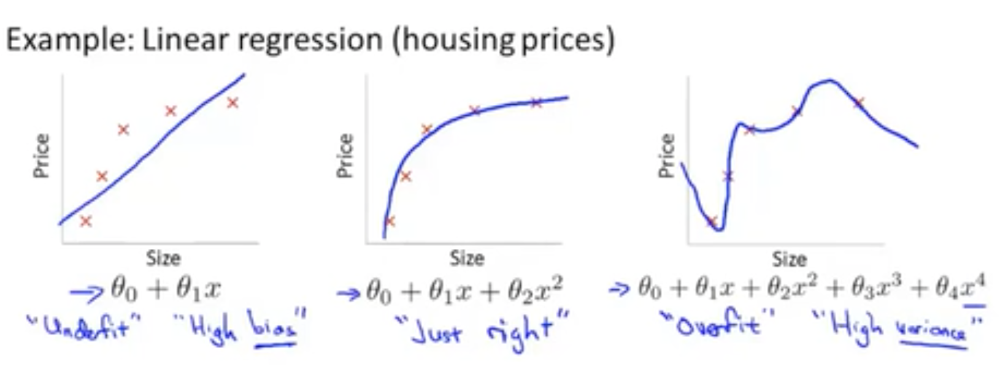
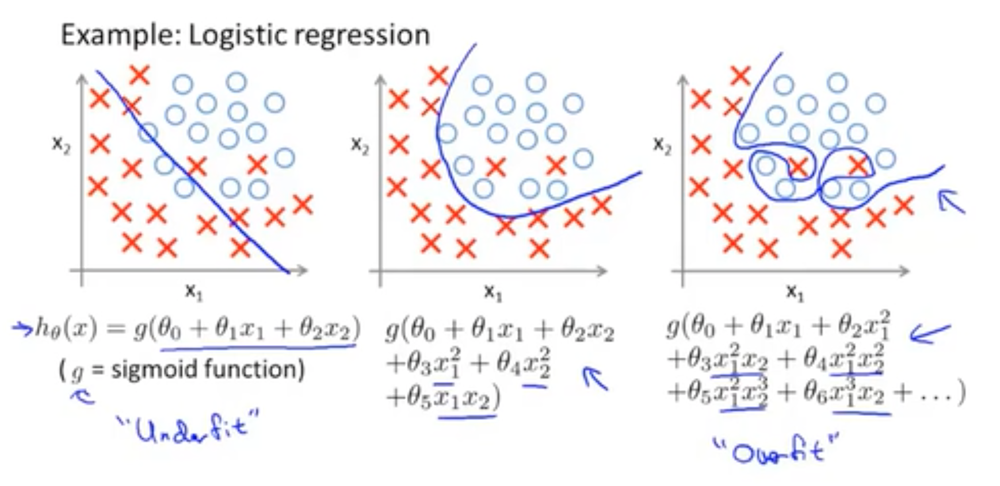
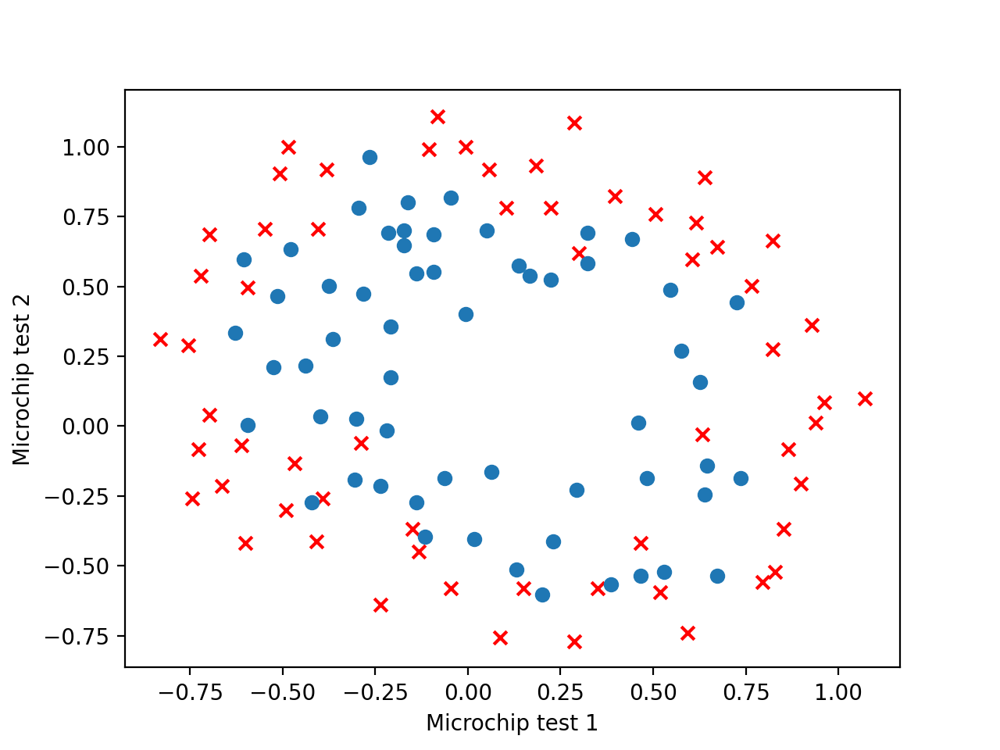
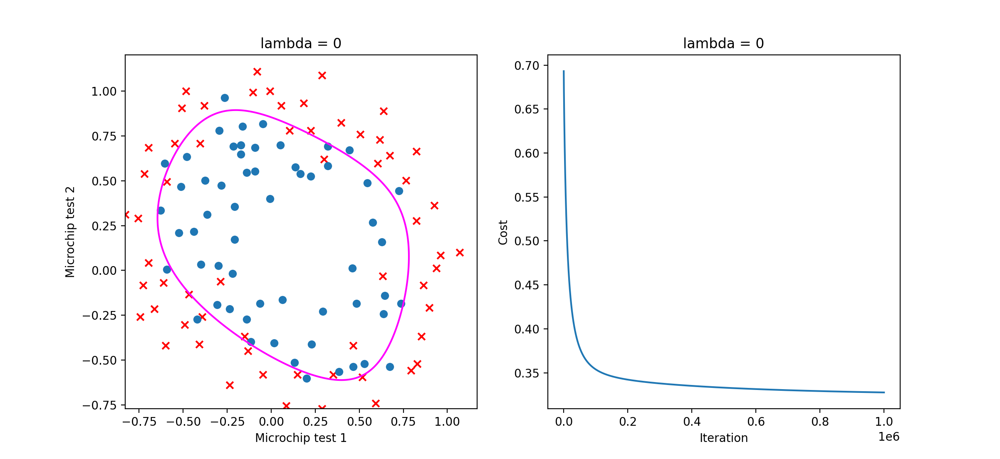
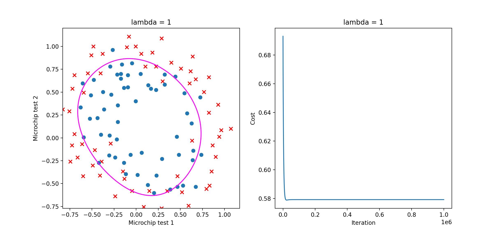
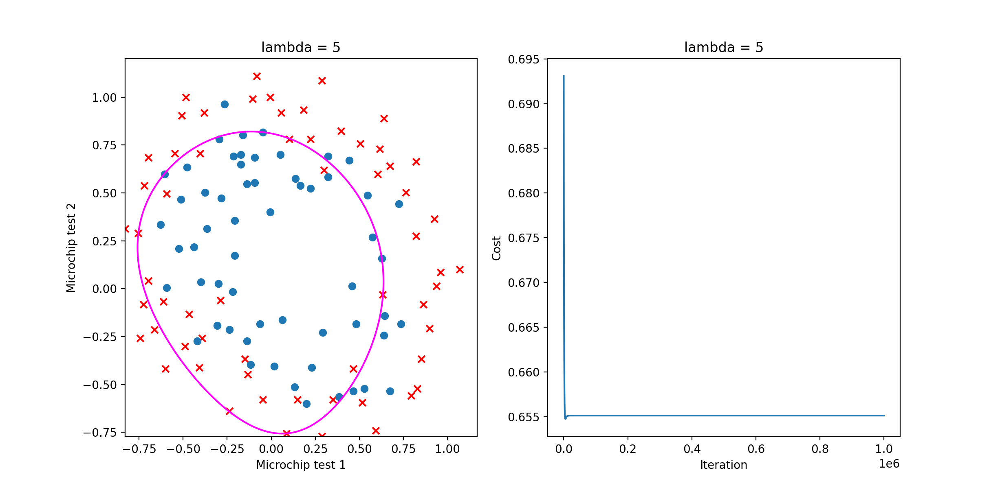
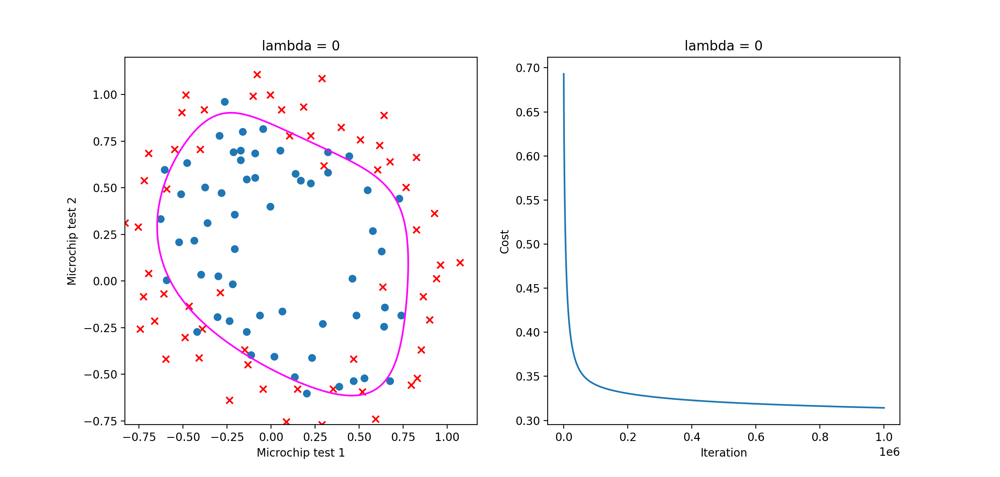
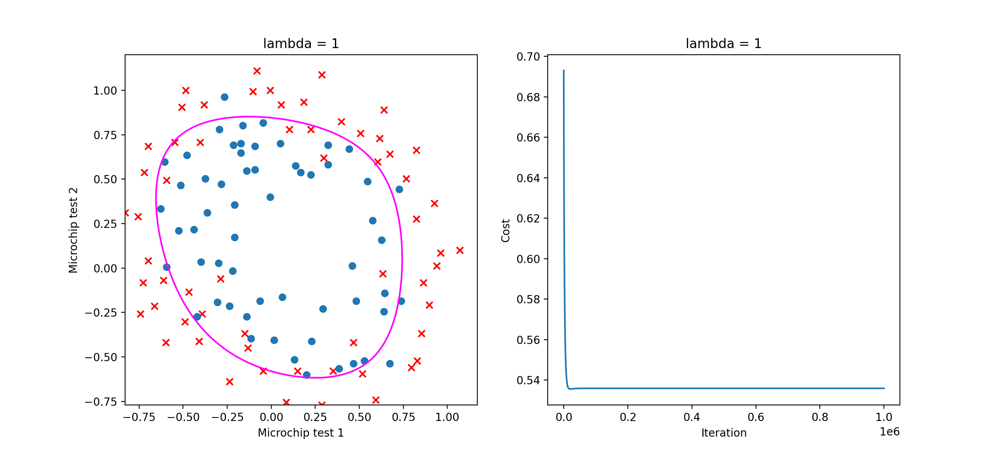
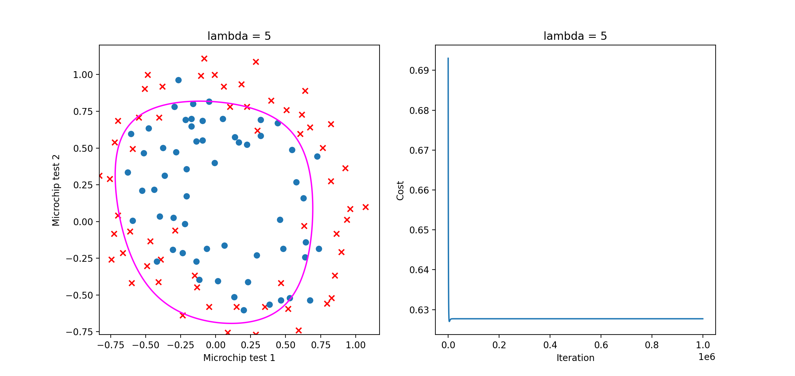

[吴恩达机器学习]5·正则化
吴恩达机器学习系列课程：https://www.bilibili.com/video/BV164411b7dx
过拟合
以多项式回归为例。多项式回归是指在线性回归的基础上，人为的引入高阶项并将其视为新的一维特征，然后进行线性回归，从而达到拟合非线性数据的目的。举例而言，设线性回归的一个数据是 \(\left(x^{(i)},y^{(i)}\right)\)，我们在多项式回归时可以将其视为 \(\left(x^{(i)},{x^{(i)}}^2,y^{(i)}\right)\)，这样就人为引入了一个二阶项，我们的回归方程（假设函数）就变成了：\(y=\theta_0+\theta_1x+\theta_2x^2\)，如此就用二次函数去拟合数据了。
我们知道，一个函数可以泰勒展开成幂级数，越展开幂级数越接近原函数，那在回归中是不是也是次数越高越好呢？答案是否定的，因为我们只有有限个数据。如果特征维数 \(n\) 过于接近数据量 \(m\)，则它会很好地拟合上我们的数据集，然而对于不在数据集中的数据，这可能并不是一个好的拟合结果。譬如，\(n=m\) 时，由插值的原理容易知道，我们可以找到一个唯一的 \(n-1\) 次多项式完美地经过所有数据，即每个数据集中的数据偏差都是 \(0\)，但是这显然不是一个好的拟合，如下图：

同样地，逻辑回归也可能产生过拟合：

解决过拟合的方法有很多，这里学习正则化方法（Regularization）。
正则化
仍然以多项式回归为例，如果我们的假设函数为：\(h_\theta(x)=\theta_0+\theta_1x+\theta_2x^2+\theta_3x^3+\theta_4x^4\)，而其中的高阶项 \(\theta_3,\theta_4\) 导致了过拟合问题，那么我们自然希望 \(\theta_3\) 和 \(\theta_4\) 越小越好。此时，我们只需要对代价函数做出一点修改：\(J(\theta)=\frac{1}{2m}\left[\sum\limits_{i=1}^m\left(h_\theta(x^{(i)})-y^{(i)}\right)^2+1000\theta_3^2+1000\theta_4^2\right]\)，这样当 \(J(\theta)\) 取最小时，\(\theta_3\) 和 \(\theta_4\) 都接近于 \(0\)，我们也就达到了目的。
一般地，我们并不知道究竟应该对哪些参数做出“惩罚”，所以我们设代价函数为： \[ J(\theta)=\frac{1}{m}\sum_{i=1}^m\text{Cost}\left(h_\theta(x^{(i)})-y^{(i)}\right)+\frac{\lambda}{2m}\sum_{j=1}^n\theta_j^2 \] 其中，\(\lambda\) 是正则化参数，\(\lambda\sum\limits_{j=1}^n\theta_j^2\) 是正则化项。即我们对除了 \(\theta_0\) 以外的参数都做“惩罚”。
如何理解这个代价函数呢？使前一项 \(\frac{1}{m}\sum\limits_{i=1}^m\text{Cost}\left(h_\theta(x^{(i)})-y^{(i)}\right)\) 尽可能小是为了去拟合数据集中的数据，使正则化项 \(\frac{\lambda}{2m}\sum\limits_{j=1}^n\theta_j^2\) 尽可能小是为了减小各 \(\theta_j\) 以避免过拟合，而 \(\lambda\) 就是在二者之间权衡的参数。如果 \(\lambda\) 很大，意味着正则化项占主要地位，有可能导致所有的 \(\theta_j\) 都太小了而无法拟合好数据，即欠拟合；如果 \(\lambda\) 很小，意味着拟合数据占主要地位，就有可能过拟合。所以一个合适的正则化参数 \(\lambda\) 非常重要。
线性回归的正则化
线性回归的含有正则化项的代价函数为： \[
\begin{align}
J(\theta)&=\frac{1}{2m}\left[\sum_{i=1}^m\left(h_\theta(x^{(i)})-y^{(i)}\right)^2+\lambda\sum_{j=1}^n\theta_j^2\right]\\
&=\frac{1}{2m}\left[\sum_{i=1}^m\left(\theta^Tx^{(i)}-y^{(i)}\right)^2+\lambda\sum_{j=1}^n\theta_j^2\right]
\end{align}
\] 对其求导： \[
\frac{\partial J}{\partial \theta_j}=\frac{1}{m}\sum_{i=1}^m\left(\theta^Tx^{(i)}-y^{(i)}\right)x^{(i)}_j+[j\neq 0]\frac{\lambda}{m}\theta_j,\quad j=0,1,\cdots,n
\] 所以梯度下降时，我们的迭代过程为： \[
\begin{align}
\theta_j&:=\theta_j-\alpha \frac{\partial J}{\partial \theta_j}\\
&=\theta_j-\alpha \left[\frac{1}{m}\sum_{i=1}^m\left(\theta^Tx^{(i)}-y^{(i)}\right)x^{(i)}_j+\frac{\lambda}{m}\theta_j\right]\\
&=\theta_j\left(1-\alpha\frac{\lambda}{m}\right)-\alpha\frac{1}{m}\sum_{i=1}^m\left(\theta^Tx^{(i)}-y^{(i)}\right)x^{(i)}_j,\quad j=1,\cdots,n
\end{align}
\]
若不用梯度下降，而是直接用正规方程，即在数学上解它，那么：
为了记号的方便，我们先假定对 \(\theta_0\) 也进行“惩罚”。首先将 \(J(\theta)\) 写作矩阵形式： \[ \begin{align} J(\theta)&=\frac{1}{2m}\left[\sum_{i=1}^m\left(\theta^Tx^{(i)}\right)^2-2\sum_{i=1}^m\theta^Tx^{(i)}y^{(i)}+\sum_{i=1}^m\left(y^{(i)}\right)^2+\lambda\theta^T\theta\right]\\ &=\frac{1}{2m}\left[\left(\theta^TX^T\right)\left(\theta^TX^T\right)^T-2\theta^TX^Ty+y^Ty+\lambda\theta^T\theta\right]\\ &=\frac{1}{2m}\left[\theta^TX^TX\theta-2\theta^TX^Ty+y^Ty+\lambda\theta^T\theta\right] \end{align} \] 然后令 \[ \frac{\partial J}{\partial \theta}=\frac{1}{m}\left[X^TX\theta-X^Ty+\lambda\theta\right]=0 \] 则： \[ (X^TX+\lambda)\theta=X^Ty \] 解得： \[ \theta=(X^TX+\lambda)^{-1}X^Ty \] 现在把 \(j=0\) 的特殊情况考虑进去，那么最后的结果就是： \[ \theta=\left(X^TX+\lambda\begin{bmatrix}0&&&\\&1&&\\&&\ddots&\\&&&1\end{bmatrix}\right)^{-1}X^Ty \]
逻辑回归的正则化
逻辑回归的含有正则化项的代价函数为： \[ \begin{align} J(\theta)&=-\frac{1}{m}\sum_{i=1}^m\left[y^{(i)}\ln(h_\theta(x^{(i)}))+(1-y^{(i)})\ln(1-h_\theta(x^{(i)}))\right]+\frac{\lambda}{2m}\sum_{j=1}^n\theta_j^2\\ &=\frac{1}{m}\sum_{i=1}^m\left[y^{(i)}\ln\left(1+e^{-\theta^Tx^{(i)}}\right)+\left(1-y^{(i)}\right)\ln\left(1+e^{\theta^Tx^{(i)}}\right)\right]+\frac{\lambda}{2m}\sum_{j=1}^n\theta_j^2 \end{align} \] 对其求导： \[ \frac{\partial J}{\partial \theta_j}=\frac{1}{m}\sum_{i=1}^m\left(h_\theta(x^{(i)})-y^{(i)}\right)x^{(i)}_j+[j\neq 0]\frac{\lambda}{m}\theta_j,\quad j=0,1,\cdots,n \] 所以梯度下降时，我们的迭代过程为： \[ \begin{align} \theta_0&:=\theta_0-\alpha\frac{\partial J}{\partial\theta_j}\\ &=\theta_0-\alpha\frac{1}{m}\sum_{i=1}^m\left(h_\theta(x^{(i)})-y^{(i)}\right)x_0^{(i)} \\ \theta_j&:=\theta_j-\alpha \frac{\partial J}{\partial \theta_j}\\ &=\theta_j-\alpha \left[\frac{1}{m}\sum_{i=1}^m\left(h_\theta(x^{(i)})-y^{(i)}\right)x^{(i)}_j+\frac{\lambda}{m}\theta_j\right]\\ &=\theta_j\left(1-\alpha\frac{\lambda}{m}\right)-\alpha\frac{1}{m}\sum_{i=1}^m\left(h_\theta(x^{(i)})-y^{(i)}\right)x^{(i)}_j,\quad j=1,\cdots,n \end{align} \]
和线性回归一样，我们更希望将上面的式子写作矩阵形式。
注意：以下表达式与
numpy的矩阵形式相对应，即存在 "broadcast" 的表示方式，在数学上不一定严谨。
代价函数的矩阵形式
回顾逻辑回归的代价函数： \[ J(\theta)=\frac{1}{m}\sum_{i=1}^m\left[-y^{(i)}\ln(h_\theta(x^{(i)}))-(1-y^{(i)})\ln(1-h_\theta(x^{(i)}))\right] \] 其中， \[ h_\theta(x)=g(\theta^Tx)=\frac{1}{1+e^{-\theta^Tx}} \] 设： \[ X=\begin{bmatrix}(x^{(1)})^T\\(x^{(2)})^T\\\vdots\\(x^{(m)})^T\end{bmatrix}\quad \theta=\begin{bmatrix}\theta_0\\\theta_1\\\vdots\\\theta_n\end{bmatrix}\quad y=\begin{bmatrix}y^{(0)}\\y^{(1)}\\\vdots\\y^{(m)}\end{bmatrix} \] 于是： \[ X\theta=\begin{bmatrix}(x^{(1)})^T\theta\\(x^{(2)})^T\theta\\\vdots\\(x^{(m)})^T\theta\end{bmatrix}=\begin{bmatrix}\theta^T(x^{(1)})\\\theta^T(x^{(2)})\\\vdots\\\theta^T(x^{(m)})\end{bmatrix} \] 所以，设： \[ h'_\theta(X)=1/(1+e^{-X\theta})\in\mathbb R^{m} \] 于是： \[ J(\theta)=-\frac{1}{m}\left[y^T\ln(h'_\theta(X))+(1-y^T)\ln(1-h'_\theta(X))\right] \]
代价函数偏导的矩阵形式
逻辑回归的代价函数的偏导函数向量： \[ \frac{\partial J}{\partial \theta}=\frac{1}{m}\sum_{i=1}^m\left[\left(h_\theta(x^{(i)})-y^{(i)}\right)x^{(i)}\right]=\frac{1}{m}X^T(h'_\theta(X)-y) \]
正则化后的矩阵形式
回顾正则化后的逻辑回归代价函数及其偏导： \[ \begin{align} J(\theta)&=\frac{1}{m}\sum_{i=1}^m\left[-y^{(i)}\ln(h_\theta(x^{(i)}))-(1-y^{(i)})\ln(1-h_\theta(x^{(i)}))\right]+\frac{\lambda}{2m}\sum_{j=1}^n\theta_j^2\\ \frac{\partial J}{\partial \theta}&=\frac{1}{m}\sum_{i=1}^m\left(h_\theta(x^{(i)})-y^{(i)}\right)x^{(i)}+\frac{\lambda}{m}\hat\theta \end{align} \] 注意，这里 \(\hat\theta=\begin{bmatrix}0\\\theta_1\\\vdots\\\theta_n\end{bmatrix}\)，即在 \(\theta\) 中将 \(\theta_0\) 换成 \(0\).
有了之前的推导，就容易写出正则化后的矩阵形式了： \[
\boxed{\begin{align}
J(\theta)&=-\frac{1}{m}\left[y^T\ln(h'_\theta(X))+(1-y^T)\ln(1-h'_\theta(X))\right]+\frac{\lambda}{2m}\hat\theta^T\hat\theta\\
\frac{\partial J}{\partial \theta}&=\frac{1}{m}X^T(h'_\theta(X)-y)+\frac{\lambda}{m}\hat\theta
\end{align}}
\] 这也是我们使用 numpy 实现正则化逻辑回归时的表达式。
实现
首先还是来看一下数据集：

显然，我们需要用一个多项式去进行逻辑回归，这里将数据的两维都扩充为 \(3\) 次，形成有 \(16\) 维特征的数据，然后进行逻辑回归。
1 | |
以下是 \(\lambda=0,1,5\) 的回归结果和收敛情况：



接下来我换了一个生成特征的方式：
1 | |
结果如下：


